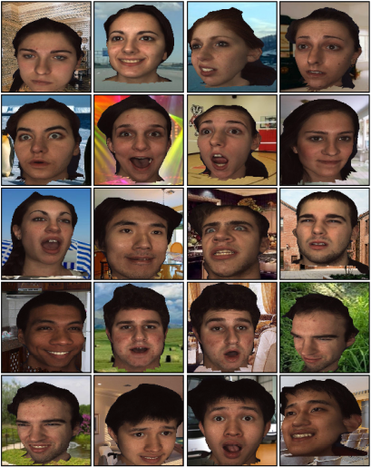

Regressing a 3D Face Shape from a Single Image
Sergey Tulyakov and Nicu Sebe
Abstract
In this work we present a method to estimate a 3D face shape from a single image. Our method is based on a cascade regression framework that directly estimates face landmarks locations in 3D. We include the knowledge that a face is a 3D object into the learning pipeline and show how this information decreases localization errors while keeping the computational time low. We predict the actual positions of the landmarks even if they are occluded due to face rotation. To support the ability of our method to reliably reconstruct 3D shapes, we introduce a simple method for head pose estimation using a single image that reaches higher accuracy than the state of the art. Comparison of 3D face landmarks localization with the available state of the art further supports the feasibility of a single-step face shape estimation. The code, trained models and our 3D annotations will be made available to the research community.
Spotlight video
Citation

Regressing a 3D Face Shape from a Single Image
Sergey Tulyakov and Nicu Sebe
International Conference on Computer Vision, 2015
Data

We release our 3D annoations of the BU-4DFE database. In order to render the training set the same way we did in the paper, we advise to use POVRay open source raytraycer and its unofficial extention MegaPOV. To generate the depth image and camera parameters in addition to the rendered scene, you will need to recompile MegaPOV after applying VLPov patch. We used images from the SUN database as backgrounds for our renderings
Annotations